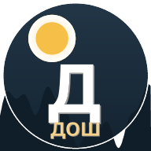

Дош
Çeçence Kelime Bulmaca • 51 Seviye • Günlük Görev
▶
Web'de Oyna
⬇
Android APK İndir
51 Seviye
Kolaydan zora artan zorluk
4 Tematik Paket
Doğa, yiyecek, nesne, kavram
Günlük Görev
Her gün yeni seviye ve ödül
Ücretsiz & ReklamsĴz
Offline oynanabilir